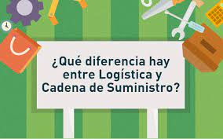
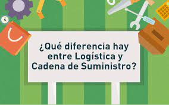

realizando nueva practica para ejecutar los comandos de commit y add


La logística son todas las operaciones llevadas a cabo para hacer posible que un producto llegue al consumidor desde el lugar donde se obtienen las materias primas, pasando por el lugar de su producción.
aprendiendo a simular con otros equipos de trabajo
Producción: la manufacturación se ha descentralizado de los centros de producción y hoy en día son muchos los procesos de fabricación de baja complejidad que se realizan en un almacén. De hecho, la logística es la encargada de coordinar fases como el montaje de kits o el paso del producto por estaciones de valor añadido.
 

Diferencias entre logística y gestión de la cadena de suministro Es un error usual confundir la logística y sus implicaciones con la cadena de suministro, que comprende todos los eslabones para la producción y entrega en las condiciones acordadas del producto. Como decíamos, la logística se define como la planificación, ejecución y control de los productos que entregamos a los clientes en la cantidad, calidad y tiempo correctos. Por su parte, la gestión de la cadena de suministro (o supply chain en inglés) se refiere a todo el flujo de trabajo, incluyendo el contacto final con proveedores y clientes. De esta manera, la logística es una pieza más (aunque probablemente la más importante) de toda la cadena de suministro. Ponemos, como ejemplo, una empresa del sector del retail: la logística se limitará a la planificación y ejecución de las fases de almacenaje y transporte, mientras que la cadena de suministro asumirá además las funciones de diseño y producción del producto, entre otras.